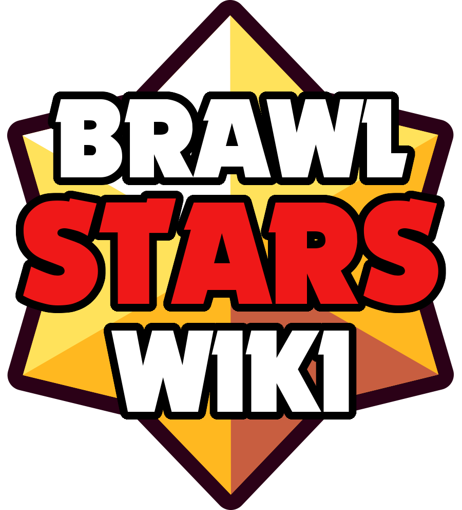

¡Bienvenido a la Wiki de fans de Brawl Stars!
Introducción
¿Qué es Brawl Stars?
Brawl Stars es un videojuego multijugador gratuito 3vs3 y Battle Royale hechos para dispositivos móviles, donde puedes juegar con amigos o solo, en una variedad de modos de juego, desbloqueando y mejorando docenas de personajes con poderosas habilidades y artilugios!
Además se compite en este juego se compite por trofeos o por rango, para subir en la clasificaciones y aumentar tu nivel como el de tus rivales